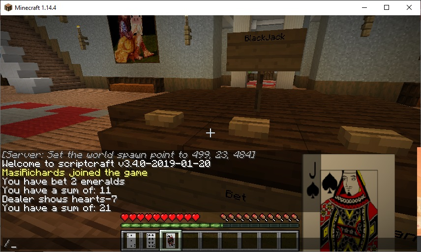

Playing Cards
Overview
The optifine mod allows you to display texture packs
A texture pack can be created for playing cards so that paper is displayed with an image based on its custom name
Here is what the playing card images look like in the game:
